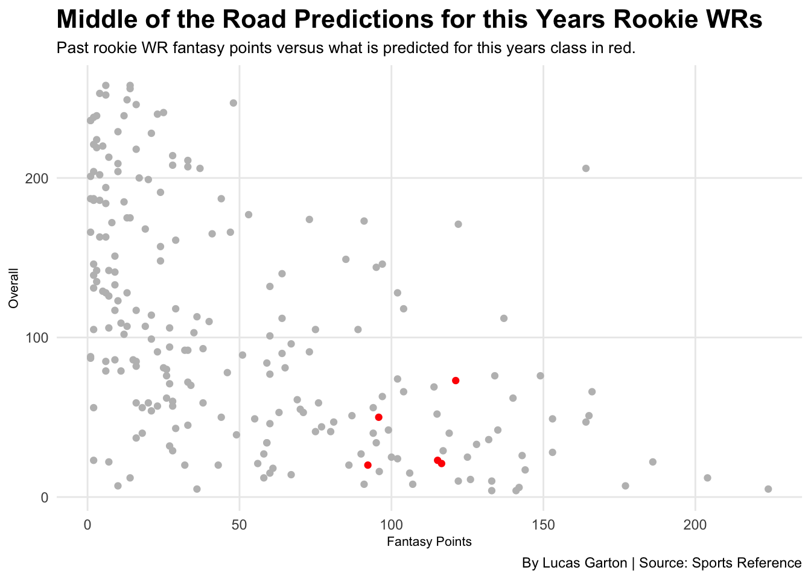

With the 2023 draft in the review mirror, I decided to look into who would be the next Jamar Chase or Justin Jefferson for the upcoming fantasy season. To do this I used machine learning to help predict what this years class of rookie wide receivers would be expected to score.
To predict there total points for the upcoming season I used multiple different factors from their senior season. To start with I used the total yards, yards per reception,total touchdowns because I thought those three stats summed up what an individual WR can do best. Then next I used simple rating because obviously a player like Zay Flowers,who played at Boston College, isn’t going to play nearly the level of talent that a Jaxon Smith-Njigba does playing at Ohio State. Lastly I used overall and pre-draft grade because I figured normally good receivers get drafted for the most part.
After running through all the data and using a combination of LightGBM and XGBoost to figure out who draft my model tells me to draft… Jalin Hyatt first. I guess my model can not account for the fact that the most bland QB in the league Daniel Jones would be throwing him the ball. Second was super close and can be considered more of a toss up with Quentin Johnston and Jordan Addison separated by only 1.3 predicted fantasy points.
…Jalin Hyatt first with a predicted score of 121 fantsay points. I guess my model can not account for the fact that the most bland QB in the league Daniel Jones would be throwing him the ball. Second was super close and can be considered more of a toss up with Quentin Johnston and Jordan Addison separated by only 1.3 predicted fantasy points.
When comparing my predictions for the 2023 rookie WRs to what rookie WRs scored in fantasy since 2013 they are not that bad. Sure no one is a once in a lifetime talent like Ja’mar Chase was in 2021 but they still are scoring higher than most rookies form years past.
Code
newcurrentxgpredict<-currentxgpredict%>%filter(.pred>80)ggplot() +geom_point(data=wrstats, aes(x=FantPt, y=overall),color="grey") +geom_smooth(method=lm, se=FALSE) +geom_point(data =newcurrentxgpredict, aes(x=.pred, y=overall), color="red") +labs(x="Fantasy Points", y="Overall", title="Middle of the Road Predictions for this Years Rookie WRs", subtitle="Past rookie WR fantasy points versus what is predicted for this years class in red.", caption="By Lucas Garton | Source: Sports Reference") +theme_minimal() +theme(plot.title =element_text(size =16, face ="bold"),axis.title =element_text(size =8), plot.subtitle =element_text(size=10), panel.grid.minor =element_blank() )

Comparatively 121 points at WR is what Chris Godwin did last year. Which ranked around 20th for WRs depending how you score in fantasy. Based of these predictions it be more than worth it to pick Hyatt, Johnston or Reed if they are sitting in your draft heading into the sixth or seventh round.